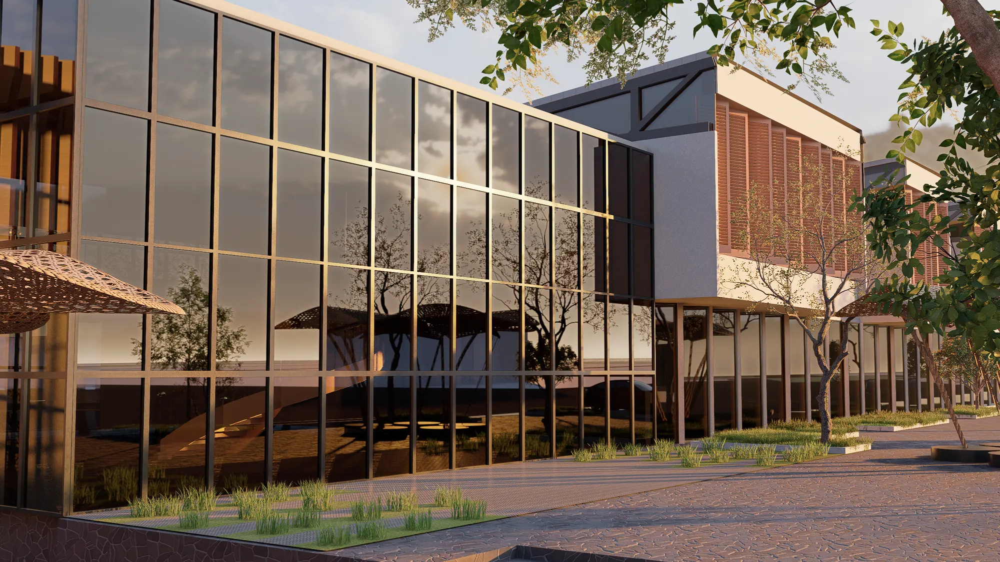
Tesis · Taller 9–10 · UPN
Centro cultural y recreativo en Cañete
Un lugar para aprender y mostrar la cultura afroperuana de San Vicente de Cañete: pabellones de talleres y exposición unidos por plazas, parques hundidos y anfiteatros.
- Lugar
- San Vicente de Cañete, Lima
- Frentes
- Av. Mariscal Benavides y Av. Chilcal
- Niveles
- 2 y parques hundidos
- Curso
- Taller 9–10 · tesis · UPN
- Programa
- Auditorio, mediateca, talleres, salas de exposición y anfiteatros
Concepto
La cultura afroperuana como punto de partida
La tesis propone un centro para preservar y difundir la cultura afrodescendiente de San Vicente de Cañete: aprender danza y artes tradicionales, conocer su historia y reunirse.
Los pabellones se giran y se alternan siguiendo el ritmo de esa cultura. Entre ellos quedan plazas, parques hundidos y anfiteatros para las actividades al aire libre.
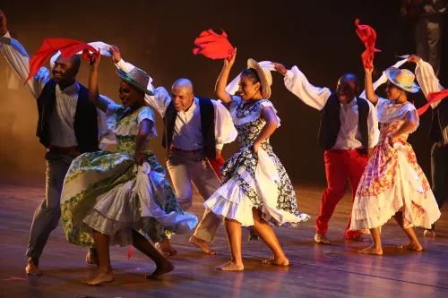
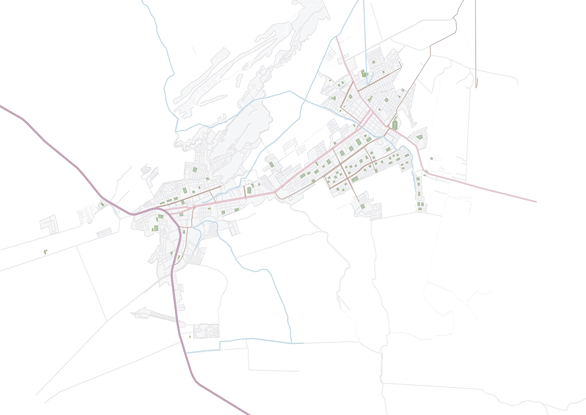
Terreno Desde Lima Desde Lunahuaná Desde ChinchaEn el corazón de San Vicente de Cañete
El terreno está entre la Av. Mariscal Benavides y la Av. Chilcal. Se llega por la vía regional desde Lima y desde Chincha, y desde Lunahuaná por el este.
- Terreno
- Vía regional
- Vía principal
- Vía secundaria
- Ríos
Implantación
Seis pasos para ubicar el conjunto
Cada paso responde a algo del lugar: el sol, el ruido de las avenidas y el viento. Elige un paso para ver su diagrama.
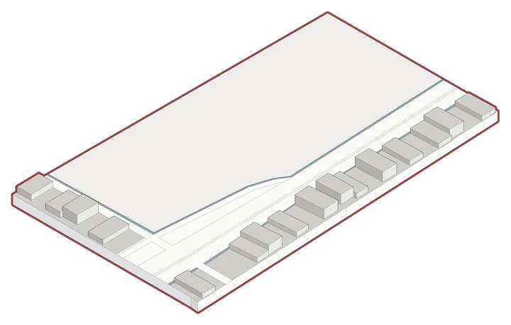
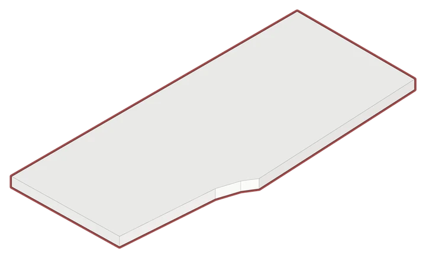
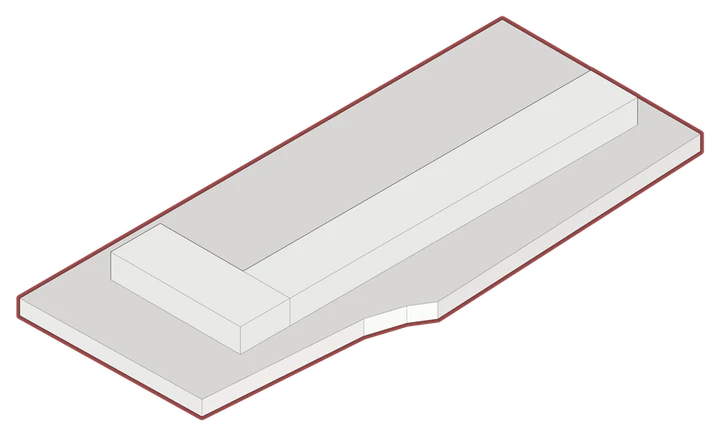
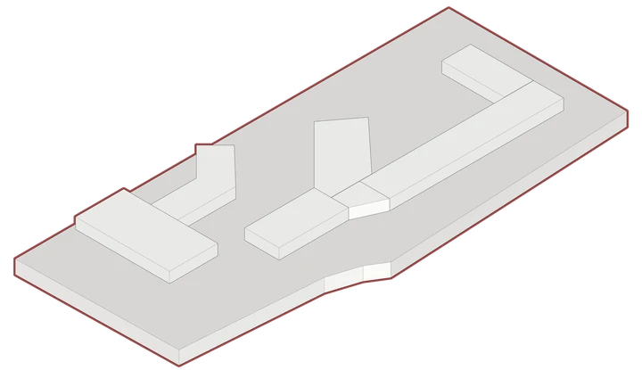
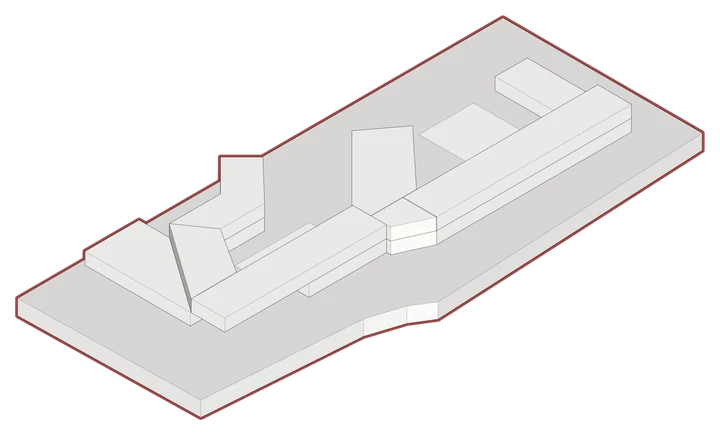
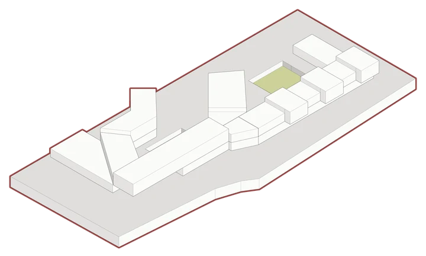
Planos
Plantas, cortes y detalle
Láminas completas, con ejes, niveles y títulos. El corte constructivo de la sala de exposición lleva su leyenda numerada.
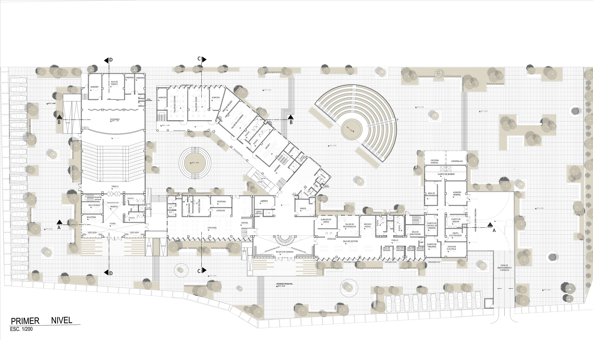
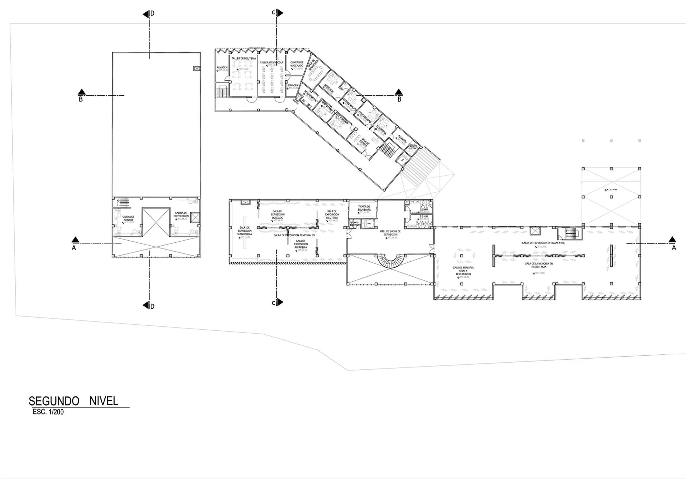
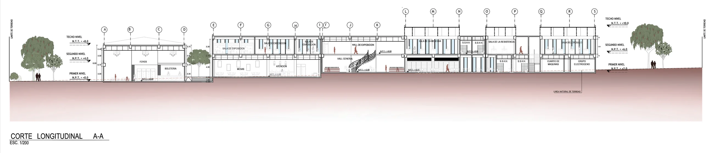
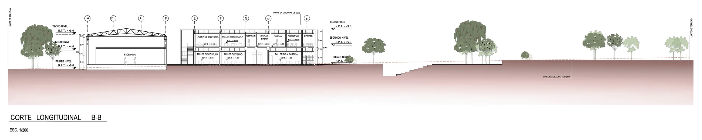
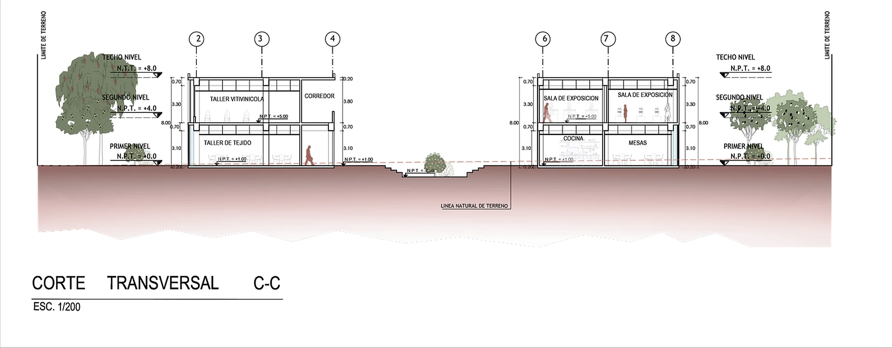
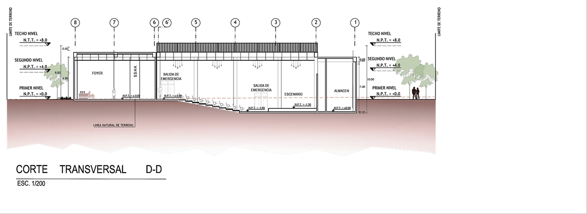
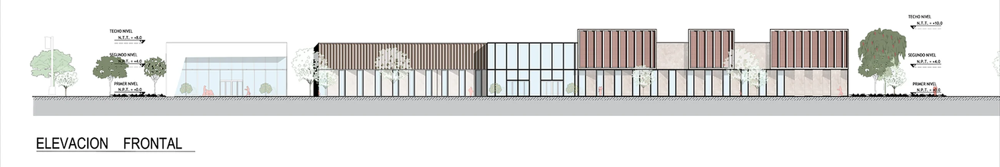
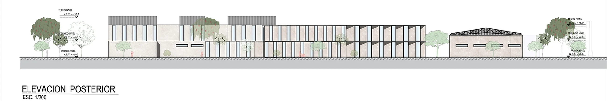
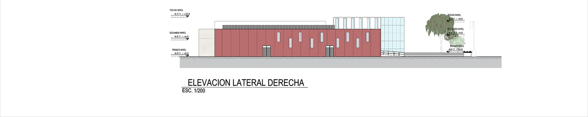
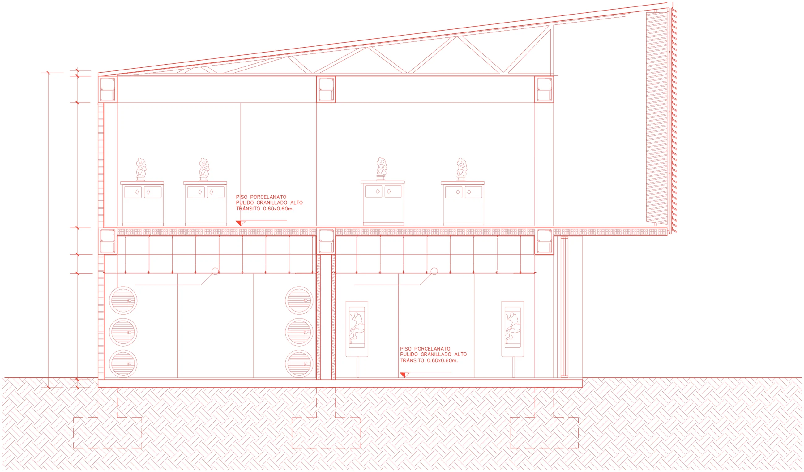
12345678910- 1Cubierta de techo metálica ligera
- 2Sistema de arriostramiento y soporte de cubierta
- 3Viga estructural de concreto armado
- 4Columna estructural de concreto armado
- 5Columna estructural de albañilería confinada
- 6Lama de celosía en cubierta
- 7Losa aligerada
- 8Cielo raso flotante de drywall
- 9Falso piso
- 10Zapata de cimentación
Renders
Pabellones, salas y plazas
Luz cenital en las salas de exposición. Afuera, plazas y anfiteatros para las actividades de la comunidad.
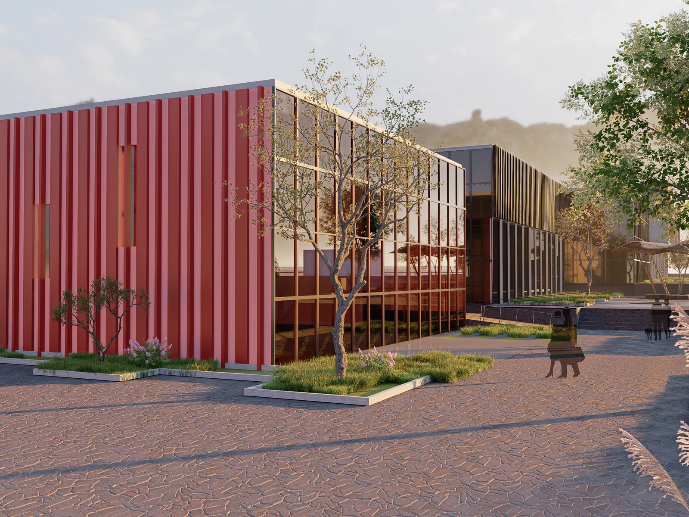
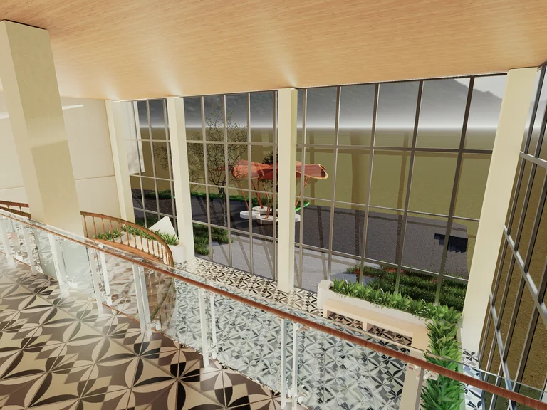
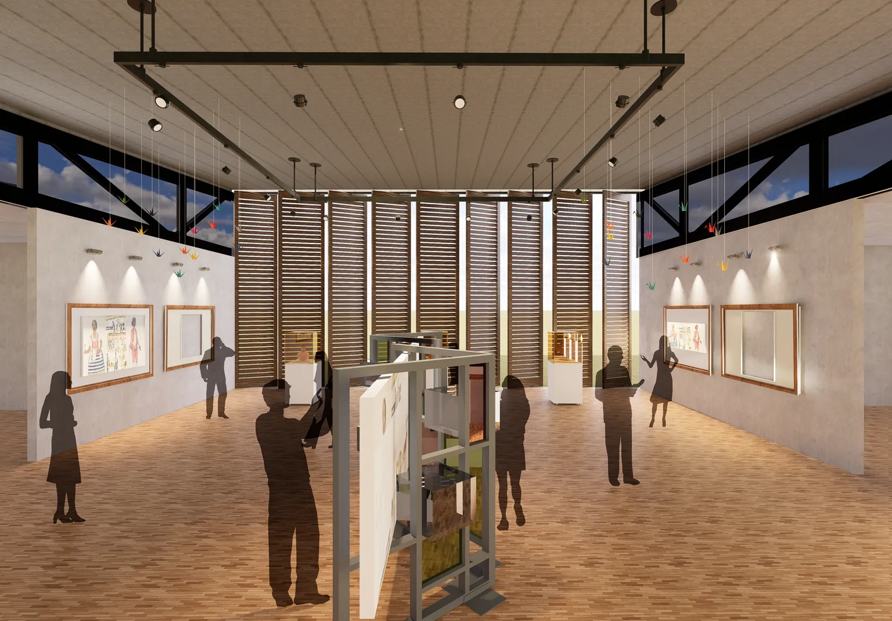
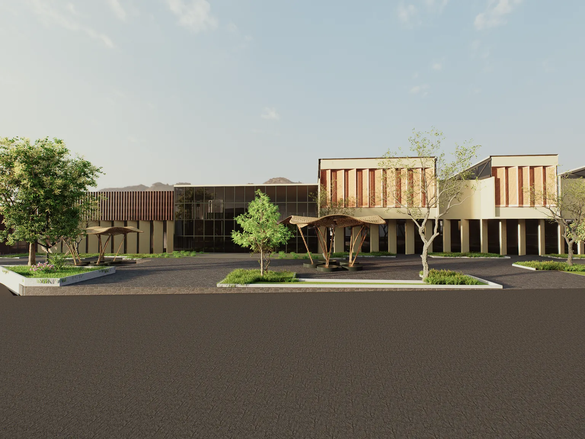